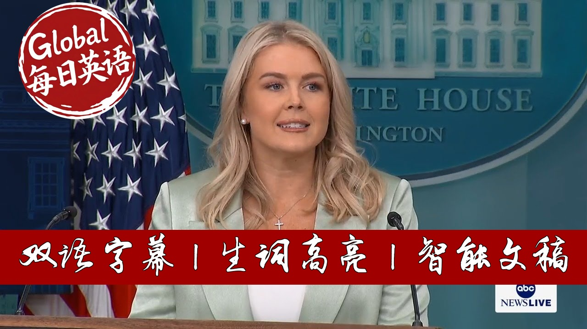

【美国白宫新闻发布会 20250910 卡罗琳回应以色列袭击卡塔尔｜记者追问爱泼斯坦文件真实性】
Summary: On August 22nd, Arena Zerutsko, a 23-year-old Ukrainian refugee, was fatally stabbed on Charlotte's rail system by repeat offender D. Carlos Brown Jr. Surveillance footage shows Brown attacking Zerutsko as she returned home from her pizzeria job. The incident has ignited fierce debate about criminal justice policies, with officials highlighting Brown's extensive criminal history spanning 14 charges since 2011, including armed robbery and felony larceny. Despite his record, a Democratic judge released Brown without bail months earlier. The White House expressed condolences while emphasizing the need for justice and policy reforms. President Trump has taken executive action targeting cashless bail systems, directing the Attorney General to identify jurisdictions implementing such policies for potential federal fund suspension. Meanwhile, new border data shows illegal crossings have dropped 93% compared to peak Biden administration levels.
摘要： 8月22日，23岁乌克兰难民阿雷娜·泽鲁茨科在夏洛特市轻轨系统遭惯犯小D·卡洛斯·布朗残忍刺死。监控画面显示，布朗在泽鲁茨科下班回家途中实施袭击。这起案件引发全美关于司法政策的激烈辩论——布朗自2011年以来累计面临14项重罪指控，包括武装抢劫和重大盗窃罪，但民主党法官仍在此前允许其无保释获释。白宫在表达哀悼的同时强调司法改革迫在眉睫。特朗普总统已签署行政令打击无现金保释制度，要求司法部长统计实施该政策的地区并考虑暂停联邦拨款。同期边境数据显示，非法越境数量较拜登政府时期峰值下降93%。

⏱️ Estimated Reading Time: 80 min.
📚 四级生词 📚 六级生词 📚 雅思生词 📚 托福生词 📚 专八生词 📚 SAT生词 📚 考研生词 📚 GRE生词
On August 22nd, Arena Zerutsko was stabbed to death on the rail system in Charlotte, North Carolina by a savage career criminal.
This is a public transportation system that many in the area use every single day to go to school and work.
Arena was on the train that night, traveling home from her job at a pizzeria, still in uniform from her shift.
This beautiful, innocent 23-year-old young woman was a Ukrainian refugee who had recently fled her country for a chance at a safer life in a promising new beginning here in the United States of America.
But tragically, a public transportation system in a major American city was more dangerous than the active war zone that she left.
The president and the entire White House are praying for her family and friends during this unimaginably difficult time.
But while we extend our thoughts and prayers, we must also seek justice for this crime and call attention to this heinous incident.
Surveillance video of the killing was finally released to the public this past Friday.
It shows the alleged killer, D. Carlos Brown Jr., pull out a knife, get up from his seat behind Arena, and prepare to thrust a blade into her neck before the released footage gets cut.
This is pure evil on full display.
The most enraging and unacceptable part of this story is that her death was entirely preventable.
D. Carlos Brown never should have been on that train that night.
In fact, he should have been behind bars.
D. Carlos Brown has been charged with crimes no fewer than 14 times dating back to 2011, including for armed robbery, felony lararseny, breaking and entering, in shoplifting.
Brown had pre previously served five years in prison for a robbery with a deadly weapon charge and he had also forfeited bonds three different times.
Twice in 2014 and once in 2023.
Despite all of this past documented criminal history, when Brown was arrested yet again in January of this past year, a Democrat judge who, well, I will add, was a supporter, a strong supporter of former Vice President Kla Harris, released this insane criminal once again without requiring him to pay any bail.
He simply had to sign a written promise to return for his court hearing.
Think about how crazy it is to ask a career criminal, someone who by definition repeatedly breaks the law, to just sign a written promise and come back again another day.
This is madness.
This monster should have been locked up and arena should still be alive.
But Democrat politicians, liberal judges, and weak prosecutors would rather virtue signal than lock up criminals and protect their communities.
And perhaps most shamefully of all, the majority of the media, many outlets in this room decided that her murder was not worth reporting on originally because it does not fit a preferred narrative.
Many of the journalists in this room spilled plenty of ink trying to smear Daniel Penny for defending a subway car from a deranged lunatic in New York City.
But none of those same reporters lift a finger to write stories about an actual murderer.
Here is the truth that every American must know.
Too many innocent people across the country continue to pay the price of the failed experiment known as cashless bail that has been championed by the Democrat party for years.
All the way back in 2020, North Carolina's then Democrat Governor Roy Cooper established a so-called task force for racial equity and criminal justice.
Sounds nice, but it's not.
That task force was co-authored by then attorney general and current Democrat Governor Josh Stein.
It recommended quote reimagining public safety to quote promote diversion and other alternatives to arrest.
It also advised to deemphasize some felony crimes, prioritize quote restorative justice, and eliminate cash bail.
Democrats in North Carolina and nationwide are consumed with pushing a woke soft on crime agenda.
No matter how many innocent Americans suffer as a result, instead of aggressively prosecuting and locking up violent criminals, the Democrat-backed cashless pale bail approach lets these criminals roam free in our country to offend again and again.
These reckless policies have turned too many, many of American cities into hunting grounds for career criminals who mock our justice system, drain law enforcement resources, and wreak havoc on law- abiding citizens.
Enough is enough and that is why President Trump is doing everything in his power by taking action to undo these absurd policies.
The president recently signed a powerful executive order directing the AG to submit a list of states in local jurisdictions with cashless bail policies so that the Trump administration may identify federal funds that can are being provided to these states and can potentially be suspended or terminated.
President Trump firmly believes that to maintain order in public safety, we must incarcerate individuals whose pending criminal charges or criminal history demonstrate a clear ongoing risk to civil society.
This is a common sense and sensible approach that the vast majority of Americans agree with, and it's time for the Democrat party to get on board with what is right.
When these criminals are caught, they must be prosecuted to the fullest extent of the law and be sent to prison where they can no longer terrorize our streets.
This is the mandate the American people delivered to President Trump and it's a mandate he intends to fulfill.
Staying on the topic of public safety, new preliminary data released today by Customs and Border Protection in August shows that President Trump has delivered the most secure border in American history.
For the fourth straight month, zero illegal aliens were released into the United States by CBP.
Nationwide encounters are down 93% below the peak of the Biden administration.
Border Patrol apprehensions on the southwest border in the entire month of August were less than what was apprehended in four days in August 2024 under the Biden administration.
President Trump has ended disastrous Biden illegal alien invasion.
He sealed our border in record time, keeping this central promise he made to the American public.
With that, I will take your questions.
Here in our new media seat today, we have Michael Shelonburgger, who is the founder of Public News with nearly two million readers and subscribers.
Michael, thank you for being here today.
And why don't you kick us off?
Sure.
Thank you for making space for new media.
Nice to meet all of you.
It's great to be here.
I want to see if you could give some insight whe the president is considering additional measures against Europe and Brazil not just for censorship but also for preventing political candidates from actually competing in elections.
We've now seen uh in Romania, France and now Germany with Yim Paul efforts to basically just prevent candidates from being able to compete in elections.
President has shown some concern around President Bolsinara who's being prevented from running.
Um, all of this is coming in the context of increased censorship of online platforms, of American platforms, and efforts to censor Americans.
I'm personally being uh investigated under a criminal investigation with my Brazilian colleagues for publishing the Twitter files Brazil.
We're very grateful that the president has imposed Magnitzki sanctions on the judge.
Is the president considering additional actions given that it appears that they're going to end up with a conviction against President Bolsinaro preventing him from running?
Is he considering doing anything about this crackdown in Europe?
I mean, it's shocking to see Yuing Paul, this mayoral candidate in Germany, the criminal indictment against him, cites him, quote, saying that he loves the Lord of the Rings as reason why he's he's an extremist and shouldn't be able to run.
So, I just wonder if you could speak to that.
And again, I'm grateful to be here.
Nice to meet you all.
And I I'm grateful for what the Trump administration has done to to push for free speech abroad.
Well, thanks for being here, Michael.
We appreciate it.
Freedom of speech is arguably the most important issue of our time.
It is enshrined in our constitution and the president believes in it strongly.
He himself face censorship in his road back to this beautiful oval office here in Washington DC.
So he takes this very seriously as does I know the vice president of the United States and the entire Trump administration which is why we have taken significant action with regards to Brazil in the form of both sanctions and also leveraging the use of tariffs to ensure that countries around the world are not punishing their citizens in this way.
Uh and at the same time the president is uh while he's leveraging the United States to safeguard our interests abroad, he's also making sure that freedom of speech remains here in the United States of America.
So I don't have any additional actions to preview for you today, but I can tell you this is a priority for the administration and the president is unafraid to use the economic in uh might, the military might of the United States of America um to protect free speech around the world.
Quick follow up to that.
Sure.
Followup which is just um there was a Reuters story saying that the the Trump administration was looking at this Europe US trade deal as one of the sticking points this issue of the censorship not just of US platforms of of Americans.
Do you have any updates on how those trade talks are going?
And I also wonder if the president is concerned about NATO membership.
NATO membership requires that you be a democracy and you have free speech.
Is it possible that some of these actions that we've seen in Romania, France, and Germany would disqualify those countries from being in NATO after this?
I have not heard the president discuss NATO membership in regards to this issue in particular, but I have heard him discuss the issue of free speech and the importance of free speech with foreign leaders around the world, including um the prime minister of the United Kingdom when we were in Scotland.
He the president brought this up and how important it is for the prime minister to protect free speech in the UK uh and in various conversations with other world leaders.
So, he brings it up and I think the entire world knows that this is a priority for the president of the United States.
Thank you, Gabe.
Uh, thank you, Caroline.
Regarding the Israeli strike in Doha, how much time or how much of a heads up did the US get and does the president support the strike?
Sure.
Well, I have a statement to read for all of you with respect to the Israeli strike in Doha.
And here it is.
This morning, the Trump administration was notified by the United States military that as Israel was attacking Hamas, which very unfortunately was located in a section of Doha, the capital of Qatar, unilaterally bombing inside Qatar, a sovereign nation in close ally of the United States that is working very hard in bravely taking risks with us to broker peace, does not advance Israel or America's goals.
However, eliminating Hamas, who have profited off the misery of those living in Gaza, is a worthy goal.
President Trump immediately directed special envoy WhitF to inform the Qataris of the impending attack, which he did.
The president views Qatar as a strong ally and friend of the United States and feels very badly about the location of this attack.
President Trump's wants all of the hostages in Gaza and the bodies of the dead released and this war to end now.
President Trump also spoke to Prime Minister Netanyahu after the attack.
The prime minister told President Trump that he wants to make peace and quickly.
President Trump believes this unfortunate incident could serve as an opportunity for peace.
The president also spoke to the Amir and prime minister of Qatar and thanked them for their support and friendship to our country.
He assured them that such a thing will not happen again on their soil.
And to be clear, the president disagrees with the location of the strike and that he passed that along to the prime minister.
The prime the president just confirmed that in the statement that I just read to you um which I spoke with him about before coming out here.
Thank you Caroline.
So is the president upset with Netanyahu now?
The president made his uh thoughts and concerns about this very clear and he spoke again both to Prime Minister Netanyahu and also the Amir and the Prime Minister of Qatar after this attack.
And the president has always made it very clear that he wants peace in the Middle East just like he sought that and accomplished that in his first term.
He expects all of our allies and friends in the region that includes both Qatar and Israel to seek peace as well.
And he wants to see that happen and he's working with um all of our allies in the region to get that done.
any consequences so to speak for Netanyahu uh doing this as it sounds against the president's wishes um or at least his belief that it was appropriate.
Is is there going to be any um directive from the president to Netanyahu in terms of what's allowed in the future?
And also is there any concern this could jeopardize the Abraham Accords?
Look, that's a decision only the president can make with respect to your first question.
To answer your second question, as you heard from the president, he said he believes that this can serve as an opportunity for peace and he's still actively and aggressively pursuing it with all of our allies and partners in the region.
Jennifer, just to follow up on that, Caroline, are you able to say how often the president spoke to the prime minister of Israel before this?
Because he that's one question.
And then what did he mean on Sunday when he posted, "I've given my last warning to Hamas, etc."
He wasn't talking about this strike on Doha.
No, he was not.
Um, as I told you, the Trump administration was notified by the United States military that Israel was attacking Hamas and the president spoke to the prime minister after the attack as well as again the Amir and the prime minister of Qatar.
And I know Secretary Rubio and special envoy Whit were present for those that call with the Qataris as well.
Uh, Reagan, thanks Caroline.
I have two questions for you on crime crackdown.
Sure.
Uh, Democrats have tried to argue that red states have higher crime rates while overlooking problems of high crime in blue cities.
I'm wondering if the president would consider working with red state governors to fix high crime in blue cities like in Memphis, Tennessee.
So, first of all, I want to get to the premise of your question, Reagan, which is being pushed by Democrats, that there is crime in red states.
Of course, there is crime in all states, but the crime in these cities is all in cities that are run by Democrats.
If you look at the the list of the top 20 high crime cities in the United States, every single one with the exception of one in Louisiana is run by a Democrat.
And these Democrats have supported the same policies that I spoke about at the beginning of this briefing like cashless bail.
If you look at a red state, Mississippi, but a Democrat-run city in that state, Jackson, in 2019, Jackson, Mississippi, eliminated cash bail for virtually all misdemeanor cases.
And while Jackson is not formerly a sanctuary city, the state of Miss Mississippi formally banned sanctuary cities.
And this city has acted as a de facto sanctuary city for criminals and illegal aliens since 2017.
Same thing Birmingham, Alabama, a Democrat-run city in a red state.
In 2017, the Birmingham City Council unanimously passed a resolution quote committing to establish sanctuary policies.
So, if you actually look at the facts from these Democrat-run cities, these are cities that are run by Democrats and by blue uh by members of the Democrat party, these are blue cities.
Uh and they have all supported these disastrous policies which allow repeated career criminals back onto the streets to further commit acts of violence.
And so to answer your question, yes, the president wants to work with anyone across this country who wants to end these horrible policies um and to bring law and order to our streets.
And I think that is proven by his tremendous cooperation with the mayor of Washington DC and our nation's capital.
And just look at the results of that.
And I do have some updates for you on the DC crime crackdown if anyone is interested.
Um, there have been a total of 2,177 arrests made since the start of the operation on August 7th.
Just last night, there were 57 arrests made in Washington DC.
Of the 57 arrests, there were 14 illegal aliens who were arrested, many of whom had prior criminal histories and other arrests just last night in our nation's capital.
So, you all can be very grateful for this.
Uh, our great men and women of law enforcement, both federal and local, working together as they should, made an arrest on a warrant for assault with the intent to kill.
The subject shot two adult males after an altercation.
They made an arrest on a warrant for an armed carjacking.
The subject assaulted an adult male in the face with a firearm and then took his keys.
We also made an arrest on a warrant for simple assault in the destruction of property and subsequently charged with seconddegree theft.
Last night in DC, there was an arrest for possession of a controlled substance with secondderee theft.
There was an arrest for possession of a controlled substance with the intent to distribute that subject.
The person is also a subject of interest in a homicide in a carjacking last night in DC.
We also arrested a felon in possession of a firearm car who was carrying that firearm without a license.
So these are the career criminals.
These are the bad guys that we are picking up in Washington DC every day.
The president would love to do this in every Democratun city across the country.
and he hopes that more Democrats will call the White House to allow us to help them.
One more that's DC specific.
Congress is poised to not extend Trump's federalization of the DC police.
Mayor Bowser signed executive order formalizing cooperation with federal forces.
You just mentioned all the success that the operation has had.
Does the White House believe that the mayor Bowser's action is enough to continue the crime crackdown?
We are very grateful for the mayor's cooperation in this effort and we look forward to continuing to work with her and the Metropolitan Police Department.
Bloomberg.
Thanks Caroline.
Um the president uh says you know he plans to speak with Putin soon.
Um can we expect a call between the two leaders this week?
I don't have any phone calls to read out between you uh the president and any other foreign leaders.
Ed, thanks.
I want to ask about the benchmark revisions that came out.
You look at the revisions uh between March of 2024 and March of 2025 and you do a little math, it averages out to 73,000 jobs roughly per month added to the economy.
Less than than what was thought.
When can we expect the Trump administration out there policies are rolling out for that increase that average to increase?
Well, let me just say something about the revisions that came out this morning.
And this was one of the biggest revisions in absolute terms in decades.
Uh, in the benchmark year, March 2024 to 2025, shows that the job growth was vastly weaker during the Biden administration than ever previously reported.
Between this revision and last year's, job growth was actually overstated by approximately 2 million jobs.
And the Biden administration stood up here and vouched for that data and told you that data was real.
And when President Trump calls into question the veracity of that data like he did before he took the oath of office and even now as president of the United States, he was ridiculed for that.
And turns out this revision proves two things.
Number one, the president was right.
And this is why we need new leadership at the Fed.
Uh and this makes it very clear that President Trump inherited a much worse economy by the Biden administration than ever reported.
And it also proves that the Federal Reserve is holding uh our monetary policy far too restrictive.
Interest rates are too high.
The Fed needs to cut the rates because of the mess that we inherited from the Biden administration.
Time frame.
The president has said a year.
Secretary Besson said maybe the fourth quarter.
When can we expect these numbers to increase?
Well, first we need accurate numbers.
We need truthful and honest data, which is why the president took the monumental step to try and appoint and and confirm new leadership at the BLS so we can have data that we can actually rely on.
U and that's what the president has been is is doing and we hope that his nominee will soon be confirmed.
Charlie, you addressed the crime of Iran Zaruka and the president has done a lot to deliver justice for victims of crimes like that horrific stabbing and the Epstein files are back in the news because a lot of Americans feel that those vict's victims never got justice.
Is the president care about these victims?
Do you think he can does he want to deliver more justice for them?
And is he willing to meet with them?
The president cares about victims of all crimes and that's why Republicans and the Trump Department of Justice have done more in terms of transparency when it comes to the Epstein case than any prior administration.
And why are the Democrats all of a sudden caring about this?
It's because they are desperately trying to concoct a hoax to smear the president of the United States.
We have seen this time and time again.
Ro Kana and all of these other Democrats, they could have cared about those victims four years ago when Joe Biden was in office.
They could have pushed for transparency then.
Unfortunately, the Democrats are using victims as political pawns to try to to smear and to push a hoax against the president of the United States.
And I will get you uh numbers on the amount of child predators that this administration and this FBI and this Department of Justice have locked up under President Trump's leadership.
We have done more than any president to protect uh victims of crime, especially disgusting, heinous sexual crimes.
And that includes the deportation of illegal aliens who are perpetrating these crimes against innocent victims in our country right now today.
And that remains a top priority for this administration.
Does the president will he meet with the victims um uh on the Doha strikes?
Did the president speak with Netanyahu before they were carried out?
Did he urge him to not go through with it or did they only speak afterwards?
Again, I read you a statement.
The Trump administration was notified by the United States military that Israel was attacking Hamas.
Uh the president uh directed his special envoy Wititov to immediately call the Qataris um and after the attack he spoke to Prime Minister Netanyahu.
Behind you.
Thank you.
Go ahead.
Uh about the Epstein case, would the White House support a professional handwriting expert review of the document released yesterday to prove that it's not the president's signature?
Uh sure, we would support that.
And in fact, I have already seen many forensic uh analysts of signatures coming out.
I believe it was the Daily Signal that published a piece with three separate uh signature analysts who said that this absolutely was not the president's authentic signature.
And we have maintained that position all along.
The president did not write this letter.
He did not sign this letter and that's why the president's external legal team is aggressively pursuing litigation against the Wall Street Journal and they will continue to.
Christian, thanks Caroline.
Following up on Ed, now that we have these revised jobs numbers, is the president concerned at all that price spikes, you know, stemming from his tariffs through the end of the year might actually be driving the country towards a depression or a recession.
What I'm asking is, is he committed to these policies now that we know how faulty the jobs data was?
The president is committed to his policies because his policies are working, Christian.
And there have been a lot of people uh fear-mongering about inflation in this room, but it just has not come to fruition.
On a monthly basis, CPI inflation has now come in at or below the market's expectation for six conse consecutive months.
Every month that President Trump has been in office, overall inflation has run at a 1.9% average pace in the president's first six months in office.
uh if you I would have told all of you that in January, you would not have believed me.
But those are the facts and those are the numbers.
And we also see many other positive signs uh in economic indicators like real GDP.
In the second quarter, it was revised up to 3.3%.
That beat the market's expectation.
Uh we know there's a capital spending boom right now, which we know is one of the greatest economic indicators of job growth.
We know wages are increasing at a far faster pace than they were under the previous administration.
We see productivity in the second quarter was also revised up to a strong 3.3%.
And total industry industrial production factory output also surged.
All of this means the economy is moving.
People are working.
People are spending money.
You look at consumer spending that is also ticking up and in the right direction.
Uh and it a large part it's because of the incredible work the president has done in terms of energy and unlocking our energy dominance in this country.
Again, these jobs uh the the numbers from the BLS today prove um that the economy was an absolute mess and we are working every single day to fix it and all of those indicators I just read for you are positive sign of what is to come.
Just one more quickly on um just wanted to get a bit of clarity on the sequence of events for the Doha attack and the notification.
Um, you said that the US military um notified uh if I got it right, the the Trump administration was notified by the US military.
That's right.
Was the US military notified by the Israeli military or did the um US military detect an incoming Israeli attack on Kentucky?
The US military notified the White House and the president of the United States.
That's all I have to share for you on that.
Danny, thank you.
Jeff, um also following up, you said that uh the president assured the leaders in Qar that this would never happen again.
Did he say that to the prime minister of Israel and did prime minister Netanyahu agree to that?
Uh the president told that to the Amir and the prime minister of Qatar and the president also overstressed the importance of peace in the region in his conversation with Prime Minister Netanyahu as well.
And Prime Minister Netanyahu told President Trump he wants peace and he wants it quickly.
That's what the president expects to happen.
The president is very clear in the statement that he just had me read and you will all see it out on True Social very shortly.
I am sure the whole world will see it.
He wants all of the hostages released out of Gaza and he wants this war to end.
Those are very two clear directives that the president is making very clear for the entire world to understand.
Mary but cutter obviously has been helping to negotiate these ceasefire talks.
Does the president think that Israel is undermining negotiations by striking Qatar?
Is he concerned that cutter's no longer going to want to play that intermediary level?
I think the president addressed that in this statement.
I can read the whole thing for you.
Again, I think it's very thorough because the president wanted to address all of your questions.
He wrote, we wrote, unilaterally bombing inside Qatar, a sovereign nation and close ally of the United States that is working very hard and bravely taking risks with us to broker peace, does not advance Israel or America's goals.
However, eliminating Hamas, who have profited off the misery of those living in Gaza, is a worthy goal.
So he answered that question.
You can't say that Israel informed the US.
What I can tell you is the United States military informed the Trump administration.
Thank you.
Um a quick follow on that.
Can you tell us when the US military was notified given that the largest US military base is in Doha?
And then I have a question on DC crime.
This morning just before the attack as I said earlier as well.
Okay.
Thank you.
And uh yesterday the president spoke about DC crime and talked about how there was virtually none.
And then he expressed frustration um about things that take place in the home they call crime.
They'll do anything they can to find something.
If a man has a little fight with the wife, they say this is crime.
See, now I can't claim 100%.
Exactly what crimes was the president referring to?
He wasn't referring to crimes.
That's exactly the point he was making.
Ouija, what the president is saying and that is that these crimes will be made up and reported as a crime to undermine the great work that the federal task force is doing to reduce crime in Washington DC.
And I think the president has every reason to believe that given the efforts of many reporters in this room who actively seek to undermine the president and what he's doing in our nation's capital.
We all know that deep inside you all agree with this because you all live here and I'm sure you are very grateful for the administration's efforts to make the city which we all reside in much safer for ourselves and our families.
Michael, thank you.
Caroline, Florida Congressman Randy Fine is calling for judges to face consequences if the violent repeat offenders they release go on to commit new crimes.
Is that something the president supports?
This not something I've heard the president discuss.
You can ask him yourself next time you have the opportunity to.
How's that, Caroline?
One more question.
Uh, on Thursday, President Trump will head to the Pentagon and also to New York City in honor of the 24th anniversary of 9/11.
President expressed any interest on creating or having congressman create a new 911 commission to answer some of the ongoing questions many Americans have about that day.
I again have not heard the president discuss that.
You're welcome to ask him yourself, but I do know he very much looks forward to going to both the Pentagon and the Yankees game in New York City on Thursday to commemorate the 24th anniversary.
As you know, the president is a New Yorker at heart.
He loves the city very much.
It is his home and you'll hear more about that on Thursday when the president speaks on this himself.
Kelly Caroline, thank you.
I want to ask you a question about the president uh speaking yesterday before the Religious Liberty Commission.
uh as you know he's created the White House Faith Office, the task force on anti-Christian bias and yesterday he talked about the importance of the Bible in America and the importance of prayer in America.
Uh some people have criticized him for that in stating that he's espousing Christian nationalism.
Yet the president has called on the American people to band together in praying for this nation for people of all faiths.
How important is that to the Trump administration?
And are there guidelines for implementing that?
Well, last time I checked, it's not just Christians who pray.
It's people of all faith who pray.
And that's what the president wants to protect, the religious freedom for Americans of all faith.
And he spoke about that yesterday.
And that's why he was very proud and excited to announce this new initiative, Pray America, encouraging all Americans to pray for our country uh in the goodness of our country leading up to America's 250th birthday next year.
Why don't we take some from the sides?
Elizabeth, go ahead.
Thank you, Caroline.
I have two questions.
First, on prayer again, is the Trump administration looking for the forthcoming prayer guidelines to challenge existing court president on the right to pray in public schools?
Um, well, the president spoke about that yesterday and some of the changes we are making to ensure that the religious liberties of America's students and our youth are respected in public schools.
In fact, he had a young student and invited him on stage to share his story about how when this young boy spoke about biological and biblical truth in his classroom.
Um, he faced consequences for that and how uh Americans of faith should not be facing consequences for expressing their religious freedom and their religious views.
Uh, not in any public school in America should that be happening.
You heard their president talk about that yesterday.
Caroline, thank you so much.
regarding Israel attack in Doha beside a phone call.
What was President Trump involvement in the attack if any?
Look, I don't have anything more to read out for you on this other than the very lengthy and thorough statement that I have shared repeatedly.
Now, go ahead.
Thank you.
Um, after the Supreme Court ruling yesterday on the ICE raids in Los Angeles, um, some uh, particularly non-white US citizens are saying that they're going to begin carrying their US passports with them at all times.
Um, what is the White House's response to Americans who are concerned about being swept up as uh others have been already in these enforcement actions?
They should not be concerned because this administration is focused on the detention and deportation of illegal alien criminals who broke our nation's immigration laws.
And the Supreme Court upheld the Trump administration's right to stop individuals in Los Angeles to briefly question them regarding their legal status because the law allows this and this has been the practice of the federal government for decades.
And the immigration and nationality act states that immigration officers can briefly stop an individual to question them about their immigration status if the officer has reasonable suspicion that the individual is illegally present in the United States.
And reasonable suspicion is not just based on race.
It's based on a totality of the circumstances to review.
And I will tell you, I spoke to our borders are about this this morning.
When ICE goes out to conduct a targeted operation uh to deport illegal criminals from our community, they are doing so with intelligence.
They are doing so with law enforcement sources.
They are doing so uh in most cases with the backing of local law enforcement who know exactly where these illegal alien criminals and drug traffickers and drug dealers are hiding in plain sight in American communities.
And the men and women of ICE are doing everything they can to not only follow the law, but to enforce the law.
And it's about time that has happened because we had four years of an administration who completely ignored and evaded our nation's uh very clear administration uh immigration laws.
and the Supreme Court has reaffirmed that.
Thanks, Caroline.
Um, one of the other documents released by the House Oversight Committee contained a photo of uh Jeffrey Epstein holding an oversized check um that was made out to him in the check to from from the president for $22,000 for a fully depreciated woman.
I wondered if the president has any recollection of that or what do you guys make of that photo uh that was included in those documents.
Did you see the signature on that check?
It is not Donald Trump's signature.
It is absolutely not.
The president did not sign that check.
But does he recognize Caroline on the New York City election?
Um is he consider I'll take both of you.
Go ahead.
So um first um is the president considering offering Mayor Eric Adams a job?
If so, why?
and does he think Curtis Lee was a serious candidate for New York City mayor?
Look, the president has made it quite clear he wants uh this race to move forward in New York City.
He does not want a communist to be running New York City, but as for weighing in on other individual candidates, I'll leave that to the president to do himself.
And then um following up on Reagan's question, you know, many of these high highest crime cities in America, they're led by black mayors, including the three that you mentioned, Jackson, Memphis, um Birmingham.
So given that, what's your response from the to criticism from the left that Trump is targeting black mayors?
Isn't he just trying to protect black people?
The president is trying to protect all Americans uh from crime and he wants to make all of our cities in America safe.
And the fact is the most dangerous cities in America are run by Democrats overwhelmingly.
And according to the FBI crime statistics, 19 of the top 20 cities with the highest murder rate are run by Democrats.
in these high crime Democrat run cities are driving up the crime states crime stats in otherwise safe red states.
So of course he wants to address this problem.
He's made that quite clear.
Um you know Mike Johnson he came out and said that the president was an FBI informant.
Do you know what he meant by that?
If if it's not true.
Uh I can affirm that is not true.
I think the speaker was referring to the fact that President Trump kicked Jeffrey Epstein out of his Marago property um for reasons the president has already discussed.
John Caroline.
Oh, thank you Caroline.
First of all, as a Washington DC resident with my family, I just want to thank the administration for revitalizing safety here in the last three weeks has been stunning.
Well, I want to go to Virginia.
All of a sudden, out of the blue, Winom Sears has closed the gap on Abigail Spanber.
Got four issues.
Coerced portions in Fairfax County without telling mom or dad, no parents.
girls going in boys bathrooms on film, right?
Two of the uh young fellas get suspended for complaining about it.
Virginia Beach man uh an innocent man was uh is now died in a car crash by a drunk illegal going on the other side of the road.
And now you got Spamber's got these racist signs.
When are we going to get the
President to make an official endorsement of Winom Sears and maybe come and campaign in South West Virginia?
Well, as you know, I'm very limited in what I can talk about when it comes to political endorsements and future elections from this government podium.
Um, but all of the issues that you just mentioned, I know are very important to the president and it's quite common sense.
It's the foundation of the Republican party and it's what sent this president back to the Oval Office.
We want to keep men out of women's sports and bathrooms.
We want criminals to be locked up.
The president wants to see law and order in every state across the country.
But as for political endorsements, I'll leave that to him and his political advisers to make those.
Sure.
Haley, I have two questions for you if it's okay.
One on Doha and one on immigration and crime.
Sure.
on Doha.
Ahead of the strike we saw today, did the administration at any point try to dissuade the Israelis from the potential for an action like we saw today?
Again, I have answered questions repeatedly on this.
I have a very lengthy statement which we will release after this briefing for all of you to read and to report on once again.
Okay.
And then on a case in Maryland, um the killing of Dakara Thompson, uh there are reports that the suspect arrested for her murder was in the country illegally uh and arrested and released for driving under the influence both in 2022 and in April of this year by US Park Police.
Is the administration looking into what process allowed this to take place?
Yes, we absolutely are.
As soon as we saw this case, we ensured that the Department of Homeland Security and the Department of Justice were on it.
And I can assure you that they are.
This is another heinous act of violence against someone who should have never been on our country illegally in the first place.
And that's exactly why the deportation of illegal criminals from our country is a top priority for this administration.
And it's something that is happening every single day.
And I would encourage all of you to continue to report on the very violent illegal alien criminals that we are deporting daily from American communities across the country.
There will never we will never understand how many lives uh have been saved by these efforts or how many lives would have been lost if not for this president uh in the administration's policy to deport illegal criminal aliens.
Thanks Caroline follow question the president I don't have any meetings for you to read out on that.
Go ahead.
Thanks Caroline.
Um is the Trump administration considering a ban on transgender Americans owning guns?
Is that something the president would support even as we've seen some gun groups oppose the idea of it?
Uh I saw reporting on this.
I understand there were very preliminary low-level discussions about this at the Department of Justice and then sometimes those discussions are reported as fact.
I'm not tracking any potential actions on this front.
Um and I'll let the president weigh in on that.
It's a policy decision and it's far too early or would be premature or inappropriate for me to weigh in on it at this point in time.
Behind you.
Go ahead.
Um after the uh immigration raid at the plant in Georgia on Friday, the president said over the weekend that he's open to some kind of changes in perhaps rules or or you know visa rules or law that would prevent something like that happening in the future for uh skilled workers to train American workers.
That's right.
Can you confirm that and that the administration supports those changes and what exactly would that look like?
Well, the president said it himself in a statement that uh he put out on Sunday night uh where he is very grateful for foreign companies from around the world uh and the investments that they are making right here in the United States of America.
And he understands that these companies want to bring their highly skilled and trained workers with them, especially when they're creating very niche products like chips or in this point in this case in Georgia like batteries.
But the president also expects these foreign companies to hire American workers and for these foreign workers and American workers to work together uh to train and to teach one another.
And so he expects these foreign companies to hire American labor.
Uh we want Americans to have these jobs.
We want Americans need these jobs.
Uh but he also understands the need for these companies to bring over their workers who already have these skills.
So I think it's a very light on what those changes might be.
I think it's a very nuanced uh and responsible and sensible approach for the president to take.
And I know that the Department of Homeland Security and the Department of Commerce are working on this matter together.
I would defer to uh you to them for any further action on this front.
Follow Caroline.
Uh thank you.
Just I want to follow up on something you said.
You said the the Epstein documents are a hoax that Democrats are perpetrating against the president.
You've said he didn't sign that check that he didn't uh sign the the birthday card that he allegedly signed.
So what is the theory since these documents came from the Epstein estate?
Who is who is I guess in your view faking these documents?
I did not say the documents are a hoax.
I said the entire narrative surrounding Jeffrey Epstein right now that is absorbing many of the liberal cable channels on on television is a hoax that is being perpetuated by opportunistic Democrats like Roana and the others whom you saw on that press conference outside of Capitol Hill uh who are trying to push this hoax against the president of the United States.
What exactly is the hoax?
I'm just trying to understand what's fake.
What's fake is not the documents.
The hoax is the Democrats pretending to care about victims of crime when they do not care about victims of crime.
When they have done nothing to solve crimes, when they have done nothing to lock up child pedophiles and child rapists across the country, uh, and when they are now using victims as political props to try and again smear the president of the United States and drag on this bad story about him, it is a distraction.
The Democrats view this story as nothing more than an attempt to distract from the accomplishments and the achievements of this administration.
And that is what we mean when we call it a hoax.
But if he didn't sign these, if you said he didn't sign the birthday card, he didn't do this, he also didn't do the check.
Those were in documents from the estate.
So what is the working theory as to why he's in the president has one of the most famous signatures in the world and he has for many, many years.
You know that Maggie, you've covered him for a long time, long before he assumed this office when he was a businessman in New York.
The president did not write that letter.
He did not sign those documents.
he maintains that position and that position will be argued in court by his lawyers.
The president is very confident he is going to win this case.
Thank you.
Is the president planning to meet with Eric Adams in New York?
Maybe at the Yankees game.
And has he personally talked to him about the race?
I am not tracking uh any meeting with Mayor Adams at this time.
Um but if that happens, I'm sure the New York Post will be one of the first people to know about it.
I'll take a couple more questions while we go to the back.
Tom Dempsey with NewsNation.
Regarding the growing US military, News Nation all the way in the back.
Uh, regarding the US military, the growing US military presence in the Caribbean, uh, when asked directly about possible future military action, President Trump responded, "You're going to find out."
What could the US public expect with that situation moving forward?
And what sort of ongoing threat does Trende?
I think it would be very unwise of me to preview what the president meant from this podium.
Uh, but I think what the heart of what the president was saying, I know what the heart of what the president was saying in this administration believes um is that the regime in Venezuela is illegitimate and it is unacceptable to this president in this administration to traffic illegal deadly drugs into the United States of America.
And that's why the president and the administration took very strong action against a boat and 11 narot terrorists um in international waters as you all saw.
I think that sends a very strong message to drug traffickers around the world.
The president will not tolerate it and the amount of drugs on that boat represents the lives of thousands of Americans that could have been killed by that deadly poison.
And we're not going to allow that deadly poison to come into our country.
You, the president, will be signing a proclamation in the Oval Office later this afternoon.
Um, and we will see you all later.
Thank you.
Thank you.
[Music]